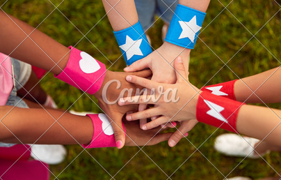
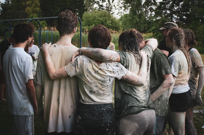
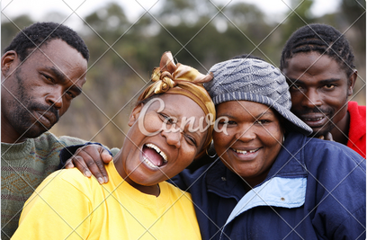

Repetition
Homeless
homeless.com


Imagine waking up outside on the cold ground, instead of in a warm cozy bed. Even worse, imagine rummaging through a trash can for your next meal not knowing what you will find. People that are homeless know these images all too well. Being homeless is a lifestyle that many people face today, but your community can help. Helping the homeless out can be an easy task, but also a rewarding task as well. Anything given to homeless people is appreciated. From a quarter to a bottle of water, these are items that people need to survive. According to statistics, nearly 200,000 people in South Africa are homeless. This ranges from people with disabilities to our Veterans as well.
Rules of Thirds
Drug Abuse
drugabuse.com

Drug abuse is something that ruins one’s life and leads to great grief and misery. Drug abuse implies the use of drugs in a way that harms the body of an individual. If drugs are taken beyond the subscribed limit, they negatively affect the body and poses a great threat to life. It leads to serious mental and physical deterioration. Drug abuse not only affects the individual who is a victim to it but also destroys and tears apart their family and love life. People who are victims of drug abuse also suffer from financial loss as they do not have the potential to do any kind of work and thus it leads to unemployment and greater family issues.
Contrast
Purpose
purpose.com

As homelessness due to drug addiction becomes more visible in our cities there are many people who wonder if offering basic aid such as food, water, and clothing is enabling unhealthy behaviors. At Blanchet House of Hospitality, we believe it is a moral imperative to feed hungry, homeless people whether they suffer with drug addiction or other challenges. Compassion can open doors to recovery and a healthier future for all.